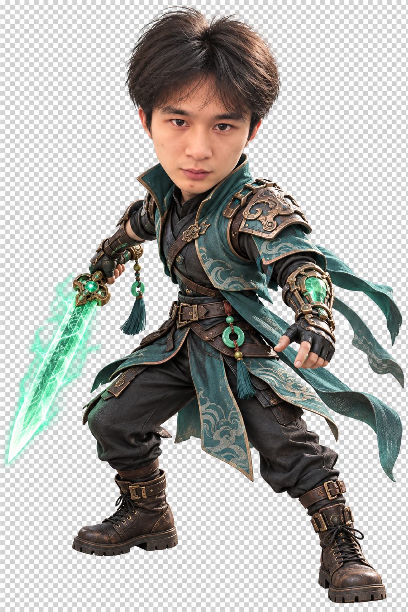

双生守护 · 选择你的征途
这一战，走向何方？
装备和成长在本局内有效 · 失败后可重新出发
选择你的守护者
青锋
近战 · 机械采茶师
以锋为界，守住这一山新绿。

专属角色 · 青锋青锋Lv. 1
140 / 140
第一波01:30
击退 0
月蚀茶魇
按住此区域移动
W A S D 移动 · 普攻自动释放 · Q / E 技能 · F 宝箱 / 传送 · Esc 暂停
灵露凝结 · 战斗已暂停
新的力量，正在苏醒
选择一项强化，继续守护茶园
秘藏已开启 · 选择一件带走
这次，会获得什么？
武器改变普攻，法宝提供常驻效果，卡牌强化本局角色。
装备与强化仅在本次冒险中保留 · 选择期间战斗暂停
本次冒险 · 战斗已暂停
行囊与法宝
茶园，再次迎来黎明
守护成功
风吹过茶山，这一抹新绿因你而留。
击退暗影0
守护时间00:00
成长等级1
出发前的小贴士
如何守护茶园
- 移动与躲避电脑使用 WASD / 方向键；手机在左下区域按住并拖动，摇杆随手指定位。
- 技能配合自动攻击普攻自动瞄准敌人。Q / 空格释放技能一，E 释放技能二；手机点击右侧按钮。
- 收集灵露，三选一升级靠近敌人掉落的发光灵露即可拾取；升级时战斗暂停。
- 迎战首领闯关共五关：清怪、开箱选奖励、靠近传送门按 F 或点按钮，终点迎战首领。无尽模式每 60 秒迎来首领，击败后开箱继续生存。